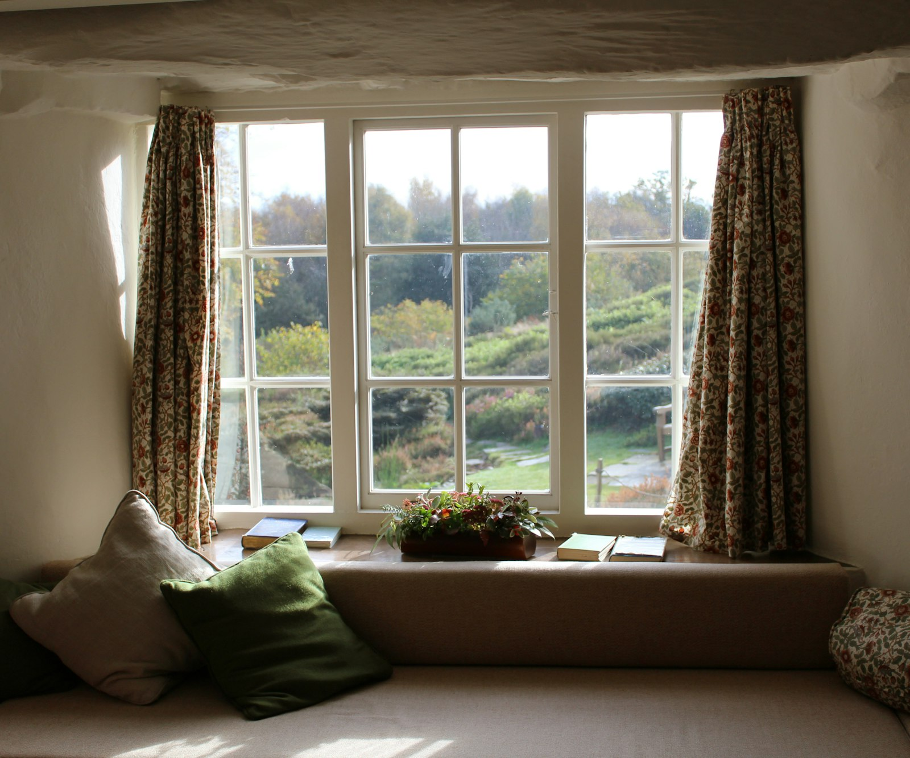

FAQ
Questions, Answered Quietly.
The things families usually ask before they choose a frame.
What kinds of frames do you make?
Wooden, acrylic, metal, collage, canvas prints, custom frames, and planned wall décor. If your photograph does not fit a standard size, we cut to the image.
Do I need to bring a printed photograph?
A print is welcome. A high-resolution file on a phone or drive is equally fine. We can also advise if an older print should be copied before framing.
Can you help me plan a memory wall?
Yes. Bring measurements or a photograph of the wall. We will suggest a layout, mixed sizes, and materials so the arrangement feels considered rather than crowded.
How long does custom framing take?
Standard pieces are typically ready within a few working days. Larger walls, unusual materials, or peak wedding season may take longer. We will give you a clear date when we take the work.
Do you make gifts?
Often. Collage frames, desk acrylics, and single portraits are popular for parents, weddings, and housewarmings. Tell us the occasion and we will keep the finish personal.
What sizes can you work with?
From small desk frames to large canvas and gallery pieces. Custom dimensions are part of the studio, not an exception.
Can I choose the mount and glass?
Yes. Mount colour, width, and glazing are chosen with the photograph. We will show you options so the decision is visual, not abstract.
Where is the studio?
HB 37, RM Colony Main Road, Dindigul - 624 001, Tamil Nadu, India. WhatsApp 88088 01432 or email venkatvelraj@gmail.com. You are welcome to visit with the photograph in hand.
Do you deliver?
Collection from the studio is usual. Delivery can be arranged for larger pieces or clients outside Dindigul — ask when you place the work.
How should I care for a finished frame?
Keep it out of harsh, direct sun where possible. Dust with a soft cloth. For acrylic, avoid household glass cleaners that can haze the surface — we will give you a simple note with the piece.